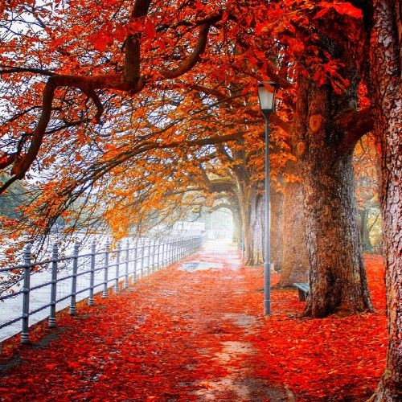
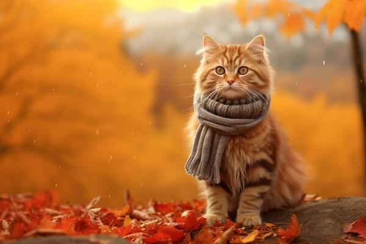
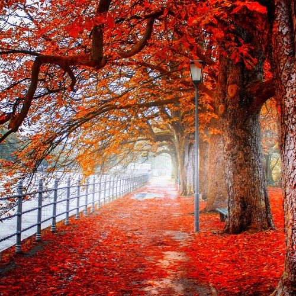
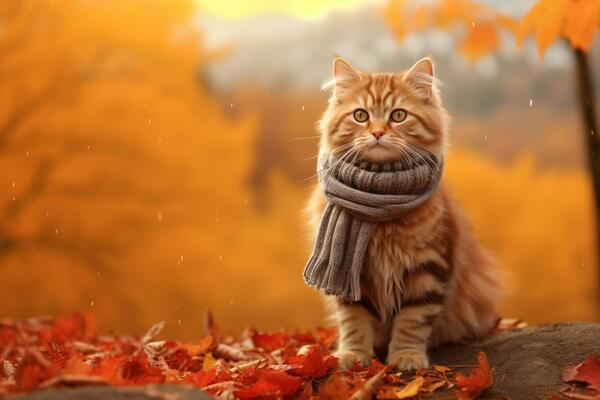

¿Que es?
El otoño, esa temporada en la que el mundo se pone sus tonos más cálidos
y se prepara para una gran fiesta de hojas bailarinas. Es como si la
naturaleza decidiera redecorar el planeta con una paleta de colores que
va desde el dorado hasta el rojo pasión. Además de ser el preludio del
invierno, es como la hora del té de las estaciones, donde todos se recogen
un poco más, se abrigan con bufandas de lana y disfrutan del último
resplandor del sol antes de que se ponga en su hibernación invernal.
Es el momento perfecto para abrazar tus chaquetas favoritas, hacer
un picnic entre montañas de hojas secas y, por supuesto, rendir homenaje
al rey de la temporada: ¡la calabaza!
volver
Caracteristicas
El otoño llega con un despliegue de características que hacen que sea imposible
ignorarlo. Es como el maestro del disfraz, transformando los paisajes verdes en
una explosión de colores vibrantes, desde el amarillo brillante hasta el rojo
intenso. Pero no solo es una cuestión de apariencia: el aire fresco y crujiente
que trae consigo es como una invitación para abrazar la comodidad de suéteres
extra grandes y tazas humeantes de café. Además, el otoño trae consigo una
sinfonía de sonidos, desde el crujir de las hojas bajo tus pies hasta el susurro
del viento entre los árboles desnudos. Es una temporada de cambio y preparación,
donde la naturaleza se despide del verano con una última explosión de belleza
antes de acurrucarse para el invierno.
volver

Deportes
El otoño trae consigo una emocionante variedad de deportes que
hacen que cada fin de semana sea una aventura. Desde el fútbol
americano, donde los jugadores parecen caballeros en armadura
moderna, chocando en un campo de batalla verde, hasta el béisbol,
donde el aroma de los cacahuetes y las olas de gritos de los
fanáticos llenan el aire. Pero el otoño no se detiene ahí,
también es el momento de admirar la gracia y la potencia
de los corredores en las maratones otoñales, mientras las
hojas caen a su alrededor como confeti natural. Y para los
amantes de la naturaleza, el senderismo se convierte en una
experiencia aún más mágica, con senderos cubiertos de hojas
crujientes y vistas panorámicas de paisajes transformados
por la paleta de colores del otoño. En resumen, el otoño
no solo es una temporada de cambio de clima, ¡sino también
de cambio de juego!
volver
 


